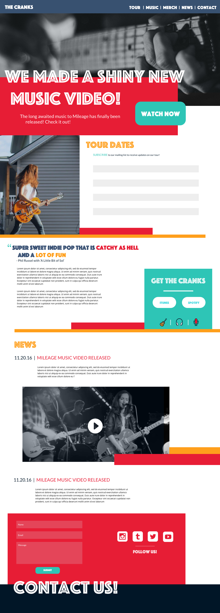

As a design student at Startup Institute, I worked with an up and coming indie pop band, The Cranks, to redesign their website. They were looking for a site that better reflected their band’s personality.
To start the project, I sat down with The Cranks and took a look at their current site. We talked about what they liked about the site and what they didn’t like. We also discussed what they were hoping to get from their new site as well as what they wanted to communicate visually about their band.
I went into this project with the assumption that the users of The Cranks website would be their fans. To understand the needs of these users, I launched a survey and performed several interviews. The survey and interview included questions about their behaviors and motivations when discovering music, listening to music, visiting their favorite band’s websites, and staying updated about their favorite bands. From the interviews and surveys, I created several personas to help understand the overlap of various users' needs, desires, and goals.
I performed a card sorting exercise with several users to help determine the way in which they organize information.
To begin creating the website, I quickly sketched out a few sitemaps that optimize the website for the target user. I ultimately chose a hierarchy of information that reflected the needs of the fans according to the survey and interviews. I prioritized tour dates first as this reportedly was the biggest reason users visited the websites of their favorite bands. Once I had settled on a site map and determine the hierarchy of information, I started wireframing the website. I took 10 minutes to sketch out a bunch of different layouts. I ultimately chose a single page website with a full width layout to give the site a modern feel.
After consulting with The Cranks to finalize sitemaps, I moved on to the visual aspects of the design. determine the new color palette, I created 4 palettes that I thought embodied the bright, fun, and quirky spirit of The Cranks. I then surveyed The Cranks to see which of the four palettes they liked the best. They chose the leftmost palette as their top choice. I followed the same process for font choices. Once the font and color choices were established, I created a high fidelity mock up in Sketch. I chose a visual design with overlapping elements and a back and forth play to the content to further embody the Cranks' quirky personality.
If I were doing this project again, I would consider other users. It is more than likely that by narrowing the defintion of users to encompass just fans, I missed out on the needs of other groups of users. Next time, I would like to speak more thoroughly with The Cranks to gather data about their experiences with booking agents, record labels, and other industry professionals.
I would have asked users for feedback when deciding upon color schemes and font choices of the new website. Though I involved members of The Cranks in my decision making, I believe that involving users could have given me a better insight into colors and fonts that represented The Cranks brand.